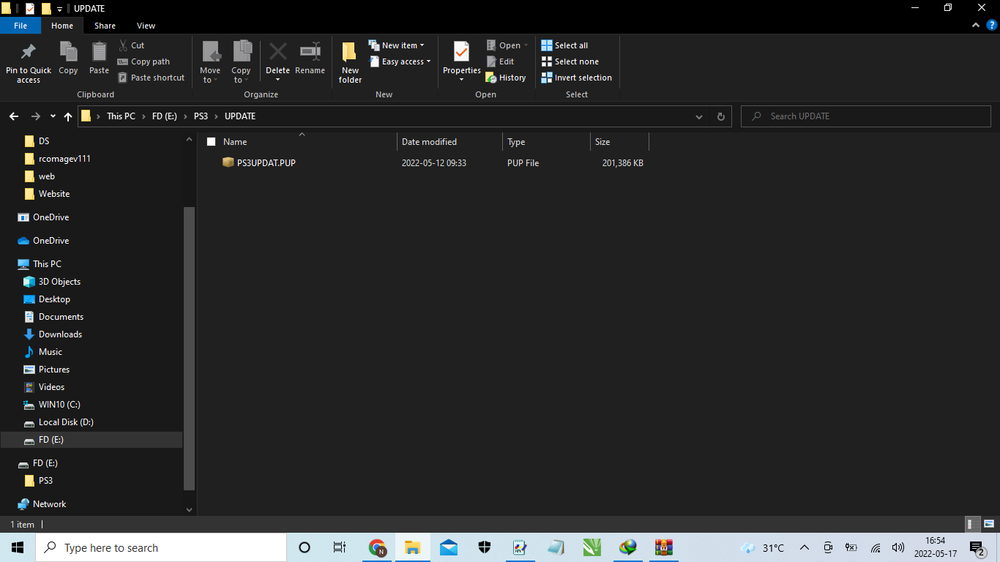
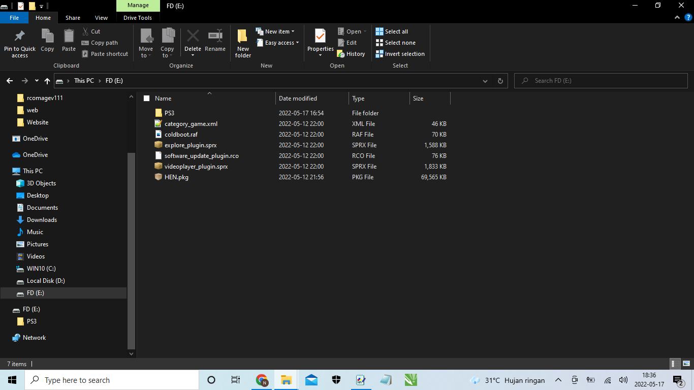

Pastikan Flasdisk / Harddisk berformat FAT32 (WAJIB)
Ekstrak file HFW 4.89.1 PRO
-Buat folder Bernama PS3
-Didalam folder PS3, buat lagi folder bernama UPDATE
-didalam folder UPDATE, Copykan file yang baru diesktrak yaitu PS3UPDATE.PUP
Urutannya yaitu:
(PS3 > UPDATE > PS3UPDAT.PUP)

Ekstrak File HEN 4.89.1 PRO
-Copykan ke 6 files-nya di flasdisk / harddisk berformat FAT32
copykan di luar folder flasdisk
Files Yang wajib dicopykan:
Atau bisa liat digambar bawah ini:
 STEP 2 SELESAI
----------------------------------------------------------------------
setelah itu, pencet (OK) saja, dan pilih 'HAN initiliaze', tunggu berapa saat akan ada tulisan 'SUCCES',
- PS3 akan restar dengan sendirinya,
- Flasdisk masih dalam keadaan dicolokkan, di XMB cari, Apphan/Offline_Enabler > Debug_package_enabler > tunggu saja, kembali ke XMB (Package Manager > Install Package Files > Standar > HEN.pkg)
- Matikan PS3, Nyalakan Kembali PS3, PS akan meminta Rebuild database, Enterkan saja.
Selamat PS-anda menjadi PSE3HEN 3.1.0 PRO
--------------------------------------------------------------------------------------
STEP 3 SELESAI